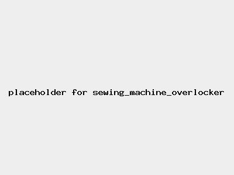

Risk Assessment / Sewing Machine/ Overlocker
Medium Risk
| Risk Assessment / Sewing Machine/ Overlocker | Level 2 Medium Risk |
|  |
|
| Before | During | After |
|---|---|---|
|
|
|
| Hazard | Persons | Before Controls | Controls | After Controls | ||||
|---|---|---|---|---|---|---|---|---|
| Severity | Likelihood | Risk | Severity | Likelihood | Risk | |||
| Entanglement in moving machinery | Operator | Level 2 Significant injury | Level 3 May happen | Level 2 Medium |
| Level 2 Significant injury | Level 1 Very unlikely | Level 1 Low |
| Piercing | Operators | Level 2 Significant injury | Level 2 Unlikely | Level 2 Medium |
| Level 2 Significant injury | Level 1 Very unlikely | Level 1 Low |
| Fire | People in the vicinity | Level 3 Serious injury | Level 2 Unlikely | Level 2 Medium |
| Level 3 Serious injury | Level 0 Theoretical | Level 1 Low |
| Cuts | Operator | Level 1 Minor injury | Level 1 Very unlikely | Level 1 Low |
| Level 1 Minor injury | Level 0 Theoretical | Level 1 Low |
| Electricution | Operator | Level 2 Significant injury | Level 3 May happen | Level 2 Medium |
| Level 2 Significant injury | Level 0 Theoretical | Level 1 Low |
| Manual Handling | Operator | Level 2 Significant injury | Level 2 Unlikely | Level 2 Medium |
| Level 2 Significant injury | Level 1 Very unlikely | Level 1 Low |